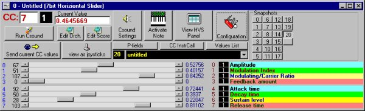
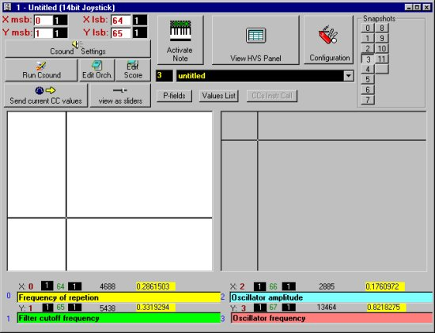
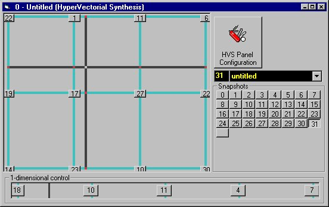
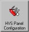
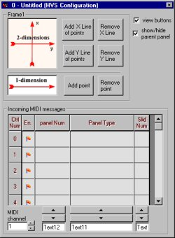

(version 2.0)
GeneralIntroduction to VMCI Plus and Hyper Vectorial Synthesis
Panel Configuration Dialog-Boxes
Hyper Vectorial Synthesis control (HVS panels)
VMCI (Virtual Midi Control Interface) Plus is a GUI program which allows to send most MIDI data to a MIDI device by means of gestural actions on the computer keyboard and mouse. VMCI Plus is fully configurable and provides a total control of MIDI messages, even without any MIDI interface card and without any external MIDI keyboard or controller. This program is primarily designed to control real-time versions of Csound (DirectCsound in particular), however it can also be used with any internal or external MIDI device or computer programs such as sequencers. It provides several panels with virtual sliders, virtual joysticks and virtual piano-keyboard. The newer version of the program (VMCI Plus 2) allows to change more than one parameter at the same time by means of the new Hyper-Vectorial Synthesis control. VMCI supports 7-bit data as well as the higher resolution 14-bit data that can be handled by the newer versions of Csound.
To install MSVC you must follow the next steps:
Here is the installation procedure to use VMCI Plus with DirectCsound:
VMCI Plus consists of several windows. When VMCI starts, the activation bar appears (after a splash screen is closed).
The activation bar is the main window of VMCI, it can be used to accomplish the following tasks:


7-bit Slider Panels can visualize up to 64 sliders (only 8 sliders are visualized in the picture).
Normally visible sliders are only a subset of the total number of control parameters that can be handled by a single slider panel. Acutally 7-bit slider panels can handle up to 2048 different parameters (that is the total number of MIDI control change messages: 16 channels X 128 controllers = 2048 parameters). See panel configuration dialog-box to learn how setting-up the total number of control parameters and the number of visible sliders of a panel.
When a slider is moved, a stream of MIDI messages is sent to the current MIDI OUT port (these MIDI messages are control-change messages, those with the status-byte $B0 + channel-number. The second byte of a MIDI control-change message is the controller number. Some famous MIDI control-change numbers are number 1-Modulation Wheel, 2-Breath Control, 7-Volume, 10-Pan, 64-Damper Pedal, etc. The third byte of a MIDI control-change message is the datum itself, expressed within a 0 to 127 range). Some Csound opcodes can convert incoming midi raw data into a floating-point number within a min-max range defined by the user; so VMCI shows current slider value in two ways: midi-raw-data and floating-point-translated data. The min-max range can be different for each slider. The default range is 0 to 1, but can be changed by the user (negative numbers are allowed too).
Near each slider some information is displayed.
Starting from the left:
All comments, as well as all current slider positions and other user-modified parameters, are stored to disk when current VMCI setup is saved.
Notice that, when you resize this panel horizontally, all visualized sliders are redrawn with a new length, to match the new size. This feature is useful to obtain a more precise control with the mouse: in this case, resizing the panel, filling the maximum area possible with current screen setting, will provide a more precise mouse motion control.
Above the sliders there is an area containing several buttons, text boxes and a combo box. This area is called button-bar. If you click one of the sliders, some information will appear immediately in the first three text boxes. These text boxes contain:
The first two text boxes can be edited and the modifications ar automatically applied to the configuration of the corresponding slider. Notice that, when you change the controller number or the MIDI channel of a slider, that numbers will appear near the slider itself (the red and white numbers at the right of each slider). The third text box duplicates the floating-point translated data value of current slider and, being a text-box, the corresponding string can be selected, copied and pasted to a csound orchestra or score. Sometimes this can be useful to interactively define Csound parameters in orchestras or scores.
A description of the other features of the button-bar follows:
 )
)See Virtual Keyboard Panel for more information about remote activation of snapshots (topic 2 and 3 of previous numbered list), and how to configure it.
Creating snapshots
When a slider panel is just created, no snapshots are present, so the snapshot area appears like this:
.
Notice that only a button without any label appears inside the snapshot area. In order to create a snapshot follow these steps:
Notice that a new button, labeled with "0" will appear in the location of the unlabeled button, and the unlabeled button position is shifted down:
.
If you continue to shift-click the unlabeled button you will continue creating other new snapshots. Up to 128 snapshot can be created (with a resolution of 1024x768, at least). If your screen resolution is lower than 1024x768, probably a lower number of snapshots will be accessible.
Recalling snapshots
To recall a snapshot, simply click onto the corresponding button in the snapshot area. You will notice that all slider positions will be moved according to the snapshot content. Also all MIDI control-change messages corresponding to visible and hidden slider are sent to the output port. (Actually, a MIDI bandwidth optimizing algorithm is implemented, so, if a slider has the same value of a message previously sent to the MIDI out port, that message is skipped).
Updating existing snapshots
To update an existing snapshot with a new slider configuration, shift-click the corresponding button. All parameters will be updated according to current slider positions.
Deleting snapshots
To delete last created snapshot, control-click the unlabeled button in the snapshot area. Notice that only the snapshot with the highest number can be deleted. However you can delete iteratively any number of existing snapshot.
Naming/renaming snapshots
Snapshots have a unique progressive number that appears in the caption of corresponding button. However they also can have a string in order to allow the user to easily locate them. The string appears as a tool-tip text when the mouse pointer remains over a snapshot button for some seconds.
There are two method to name/rename snapshots. The first method is to ALT-click the snapshot button; a dialog box will ask the user to type the snapshot name and press the OK button. The second method will be explained in next topic.
Renaming snapshot with the combo box can be made faster by setting the "Rename snapshots straightaway" check-box (placed in the activation bar) checked. In this case it is not necessary to change the focus from last clicked snapshot button to the snapshot combo-box, but it is possible to type the text directly, after clicking the button itself.
These sliders allow a higher precision when using Csound's 'midic14' , 'ctrl14' and 'sliderXXb14' opcodes. The higher resolution is provided by combining two different MIDI controller messages for each slider, one for the first seven bits (Most Significant Byte) and the other for the last seven bits (Less Significant Byte). So a fourteen-bit number is generated, supporting of a range of 0 to 16383 vs. the 0-127 range of the seven-bit sliders. To obtain a real resolution improvement, the number of pixels scanned by the mouse movement (when moving a slider) must be greater than 128. For this reason it is recommended to resize horizontally the 14-bit slider panel, setting it to the maximum width allowed by your screen resolution.
The 14-bit slider panels are very similar to the 7-bit ones. A description of each difference is presented below.
These panels contain 10 mouse-sensitive areas. When the right mouse button is pressed over one of these 10 areas, two MIDI control-change messages are sent, the first corresponding to the horizontal position, the other to the vertical one. So it is possible to control two different parameter at a time with a single mouse movement. When you drag the mouse into a mouse-sensitive area, a stream of control values will be sent to the midi-out port. This behavior is similar to 'xyin' opcode of Csound. A total of 20 controllers are visible in each panel, however the total control numbers available is 2048 as in the case of 7-bit sliders.
The toolbar of these panels is similar to that of 7-bit slider and 14-bit slider panels. The differences are:

The mouse-sensitive areas of 14-bit joystic panels allow a higher precision when using Csound's 'midic14' , 'ctrl14' and 'sliderXXb14' opcodes. The higher resolution is provided by combining two different MIDI controller messages for each slider, one for the first seven bits (Most Significant Byte) and the other for the last seven bits (Less Significant Byte). So a fourteen-bit number is generated, supporting of a range of 0 to 16383 vs. the 0-127 range of the seven-bit sliders. To obtain a real resolution improvement, the number of pixels scanned by the mouse movement (when dragging mouse inside a joystick area) must be greater than 128. For this reason it is recommended to resize both horizontally and vertically the 14-bit joystick panel, setting it to the maximum dimension allowed by your screen resolution.
The 14-bit joystick panels are very similar to the 7-bit ones. A description of each difference is presented below.
Each slider/joystick panel is parent of a panel configuration dialog-box, which can be shown/hidden by clicking the "Configuration" button.
This is the picture of a panel configuration dialog-box:
A panel configuration dialog-box accomplishes the following tasks:

The Hyper Vectorial Synthesis control panels allow a new way of gesturally interacting with massive amount of synthesis parameters. Each slider/joystick panel is the parent of a Hyper-Vectorial Synthesis panel connected to itself, which can be shown/hidden by clicking the "View HVS panel" button.
Hyper-vectorial synthesis panels allow the user to vary many parameters at the same time, with a single mouse movement. See the Introduction section for more theoretical information about Hyper Vectorial Synthesis.
HVS panel has two mouse-sensitive areas:
a one-dimensional area (see picture below):

...and a two-dimensional area (see picture below):
During a performance, the user interacts with this panel by dragging the mouse inside one of mouse-sensitive areas.
Also, a MIDI remote control to move the cursor of each areas is provided (see Panel Configuration Dialog Box).
Each button inside mouse-sensitive areas represents a breakpoint. A breakpoint (as a snapshot) is a set of values of different synthesis parameters.
Each breakpoint must be linked to a previously created snapshot. Notice that the snapshot area is present also in HVS panel; snapshots buttons of this area are simply shortcuts to the snapshots of the parent slider/joystick panel.
In order to link a breakpoint to a snapshot, click the breakpoint button, a dialog box appears asking to type the snapshot number to link to, then type the number and click OK. As a faster alternative, drag the snapshot button with the right mouse button over the breakpoint button to link, then drop it.
At first, the user has to decide how many breakpoints he needs both for the one-dimensional area and the two-dimensional one. To set these numbers it is necessary to open the HVS configuration panel by clicking the button. The following dialog-box will appear:

To add a breakpoint in the one-dimensional area, click the "Add point" button; to remove leftmost breakpoint of the one-dimensional area, click the "Remove point" button. Notice that at least two breakpoints must be present in the one-dimensional area. Actually when the HVS panel is first opened, its one-dimensional area contains two breakpoints.
The two-dimensional area consist of rows and columns of breakpoints, and at least two breakpoints must be present in each row and in each column. Consequently the minimum number of breakpoints allowed in two-dimensional area is four. Actually when the HVS panel is first opened, its two-dimensional area contains four breakpoints.
To add a row of breakpoints in the two-dimensional area, click the "Add X Line of points" button; to remove a row of the one-dimensional area, click the "Remove X Line" button.
To add a column of breakpoints in the two-dimensional area, click the "Add Y Line of points" button; to remove a column of breakpoints in the one-dimensional area, click the "Remove Y Line" button.
Notice that you can hide all breakpoint buttons by unchecking the "view buttons" check-box.
Also you can hide the parent slider/joystick panel by unchecking the "show/hide parent panel" check-box.
You can also assign an incoming MIDI message to the pointer motion of one-dimensional and two-dimensional HVS areas, in order to obtain a remote control of Hyper-vectorial synthesis. To do that you can configure the messages of the "Incoming MIDI messages" grid. This grid is identical to that of the Panel configuration dialog box. See Panel configuration dialog box for more information.
Moving the mouse around the HVS areas will change all parameters stored in the adjacent breakpoints, by linearly interpolating their values according to the mouse position. This gives a very powerful approach in synthesis control. See Introduction section for more theoretical information about Hyper Vectorial Synthesis.

The Virtual Keyboard panel allows to trigger any kind of MIDI voice message, not only note-on/off messages. A click on a piano-key-like push-button can send a note-on/off, a program-change or a pitch-bend message to the MIDI out port . The user can configure each key to send the type of message he needs; any type of MIDI VOICE messages can be assigned to each piano-like button.
Also it is possible to assign a computer key to a piano-like button so you can play the computer keyboard in the manner of a piano keyboard. A total of 959 MIDI messages can be stored in memory.
Furthermore remote control is possible by means of incoming MIDI note-on or program-change messages. All these messages are completely configurable by the user.
Besides, snapshots belonging to any slider/joystick panel can be associated to each piano-like button. In this case each snapshot can be activated both by computer alphanumeric keyboard and by a remote MIDI keyboard sending messages to VMCI. The snapshot assignment is totally configurable.
An explanation of each Virtual Keyboard feature follows.
When you open the virtual keyboard panel for the first time, it is set to a default configuration. All of the piano-like buttons are set to send MIDI note-on/off messages, so you can play these buttons as they would be the keys of a piano. However you can totally edit this configuration.
There are three modes to operate with the Virtual Keyboard panel:
see also the radio buttons in the picture below:
You can switch to any of these three modes by clicking the corresponding radio-button.
In play mode you can play the notes, trigger the MIDI messages and/or recall snapshots Virtual Keyboard is configured with.
In edit mode you can change the type and the data of the MIDI message associated with each piano-like button. Also you can assign each piano-like button to any computer key. In edit mode you can also assign an incoming MIDI note-on or program-change message to a piano-like button, in order to allow remote control of each button of the virtual keyboard.
In show mode you can view the parameters (message type, message data and the computer key assigned to that button) assigned to each button.
Notice that snapshots can be linked to each piano-button being in all three modes, by simply dragging snapshot buttons of a slider/joystick panel with the right mouse button, and dropping them to any piano-like button of the virtual keyboard panel.
Each piano-like button has an index.
Notice that indexes are the main points of reference of virtual keyboard panel configuration.
To play the virtual keyboard as a piano you must set its panel to play mode. Play mode is the normal mode of the virtual keyboard panel. In this mode it is possible to click the piano-key-like buttons in order to play notes or to send some MIDI voice messages to Csound or any MIDI instrument connected to a MIDI port.
Each button has an index, starting with zero. Indexes, not buttons, are the points of reference of each single key configuration. Notice that there are 192 piano-key-like buttons, but the total number of indexes available. To access to all indexes available, you can add an offset to the index reference of each piano-key-like button; you can do that by clicking to any of the 'keys to visualize' radio-buttons (see picture below):
.
You can also define an offset manually by typing it directly to the 'index offset' text-box and clicking in another zone of the panel.
You can play glissandos with the mouse by pressing the 'CTRL' key instead of the left mouse button as normally.
You can enable/disable the sustain-pedal on all 16 midi channels by pressing/depressing the 'ALT' key or by clicking the 'sustain' check-box.
The two vertical sliders on the right of the piano-buttons can add a global offset of the first and second data-byte of each midi-message. So if messages are note-on messages, you can change the note-number (i.e. the first data-byte of that message type) or the velocity (i.e. the second data-byte) of all keys at the same time.
To edit a piano-key-like button, select the 'edit mode' radio button.
Then click to a piano-like button. You can see the data in the text boxes of will change (see the picture below).

Notice how the number inside the 'index' text-box (that with yellow background) changes. The number you see in this text-box is the index number of the last piano-like button pressed. You can edit the indexes greater than 191 by clicking to any of the 'keys to visualize' radio-buttons (see play mode). To modify the parameters of current index, fill the data text boxes: you can change the MIDI channel, the first and second data byte according to your needs. Also you can choose the midi-message type you want to be assigned to that index. To do this you must select one of the midi-status-byte radio-buttons. Notice that you can also disable the present index. In this case the corresponding button will not sent any MIDI message.
To test current index setting, simply click to the 'current message output test' button ().
You can assign a computer-keyboard key to current index. To do this put the focus in the 'key shortcut' text-box and type a key on the computer keyboard. You will see an ascii value appearing inside the 'key shortcut' text box.
You can assign an incoming MIDI note-on and/or program-change message to an index; in this case, when the MIDI message is recognized by VMCI, the corresponding index will be activated. To assign an incoming message you have to open the "Keyboard remote MIDI configuration" dialog box by clicking the corresponding button (). To assign a message to current index you have to fill the corresponding white text boxes of "Keyboard remote MIDI configuration" dialog box (see below):
A faster way to assign a MIDI message to current index is to send it directly to the VMCI MIDI in port by means of a remote controller such as a MIDI master keyboard.
In order to save edited parameters of current index to memory, you have to press the 'apply values to current index' button.
There is also a faster way of saving the parameters of current index and switching to previous or next index at the same time: click one of these two buttons:
.
Pressing one of these buttons both store the last edited parametrs and switch to previous/next index.
The 'show mode' is used only to view the configuration parameters of each piano-key-like button. In this mode, a computer-keyboard key can be pressed to see how current configuration parameters will change.
VMCI converter is a little application provided in order to convert setup files created with old versions of VMCI to VMCI plus format, as VMCI Plus cannot read .stp files directly. Notice that the file extension of old setup files is .stp whereas the new extension is .stp2.
The use of this little program is very simple. To start the program, double-click the executable file icon (VMCI Converter.exe) or an eventual shortucut you create. Once the program is started, simply drag/drop the .stp file you want to convert to the program window and to press the "Save in stp2 format" button. A file of the same name, but with extension .stp2 will be created in the same directory of the source file.
You can also change the pathname of the .stp2 file before saving it, by editing the "Converted file:" text box.
As VMCI converter always generates eight panels in the newly converted file, it is suggested to delete the eventual unused panels after loading the .stp2 file, then you can save the modified file with the same name, replacing the redundant file.
The this program is copyright shareware, it is not public domain.
In unregistered copies, a boring message-box appears randomly while user is working and can be closed only after waiting some seconds. When the user registers VMCI Plus, he receives a key-code that suppresses all boring warnings.
VMCI Plus is not a free program, however previous versions of VMCI are free and still available for download.
If you intend to continue using VMCI Plus after 90 days of evaluation, you must register it.
NB. The unregistered software is still useable after the 90-day trial period has expired, but to continue doing so is illegal. The exception being, if user has applied for registration before the last day of trial period, he may continue using the software pending receipt of registration key.
You can copy the unregistered version of the program and give it to your friends or to any other person as long as for no charge. This program cannot be distributed in shareware compilations CDs without prior written approval from the author.
No responsibility is taken for any damage or losses caused by this package.
All program trademarks belongs to its respective author.
Registering
The key-code to suppress the warning message-boxes will be communicated to all people who register the program. To receive the key-code you must send to the author your complete name. He will send you the key-code as soon as he receives notification of the payment.
See the included register.txt file to get more information about registering.
Important
When you receive the key code you have to fill the dialog box opened by clicking the "About - Set Registration Key" menu. You must put your exact first and family name. The string containing your name is linked to the key code, so, if you type an incorrect name, the magic code will not allow to switch to Registered mode. Uppercase letters are significant. After typing name and key-code, you must close and restart VMCI Plus in order the key code have effect.
You can send any question to the following email address:
or
Special thanks to Hubert Winkler, for allowing the inclusion of his Hubi's loopback in this package
Many thank to all the Csound crew
(starting from its author Barry Vercoe):
Mike Berry
David Boothe
Richard Boulanger
Eli Breder
Michael Casey
Michael Clarke
Perry Cook
Sean Costello
Richard Dobson
Mark Dolson
Dan Ellis
Rasmus Ekman
Tom Erbe
John ffitch
Bill Gardner
Matt Ingalls
Richard Karpen
Allan Lee
David Macintyre
Jean Piché
Marc Resibois
Hans Mikelson
Paris Smaragdis
Greg Sullivan
Robin Whittle
Many thanks to Riccardo Bianchini for the suggestions about how to implement some stuff.